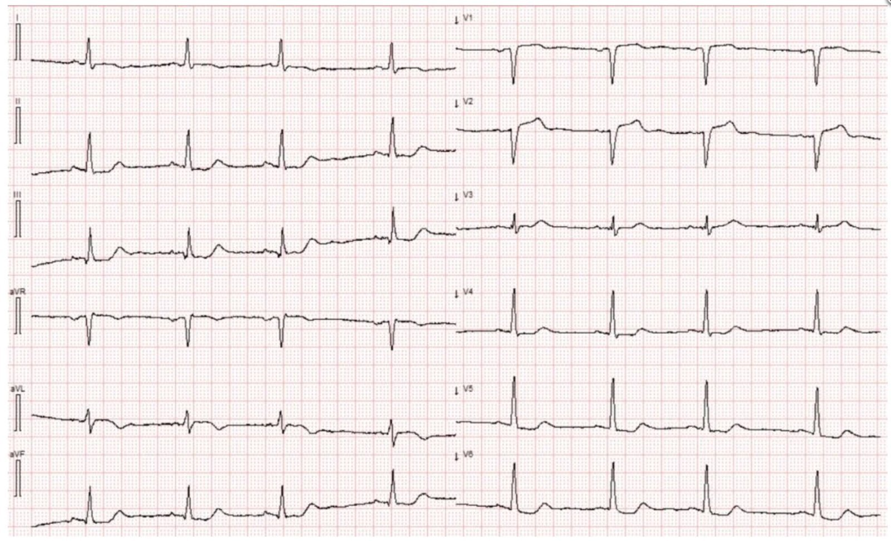
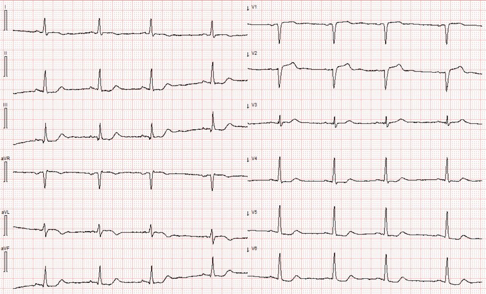
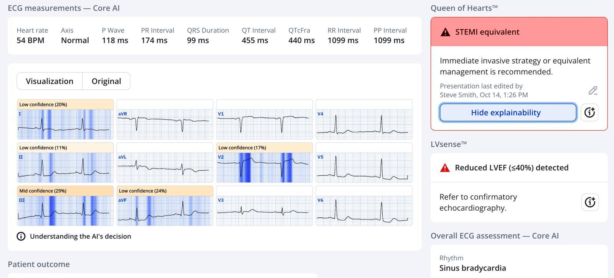
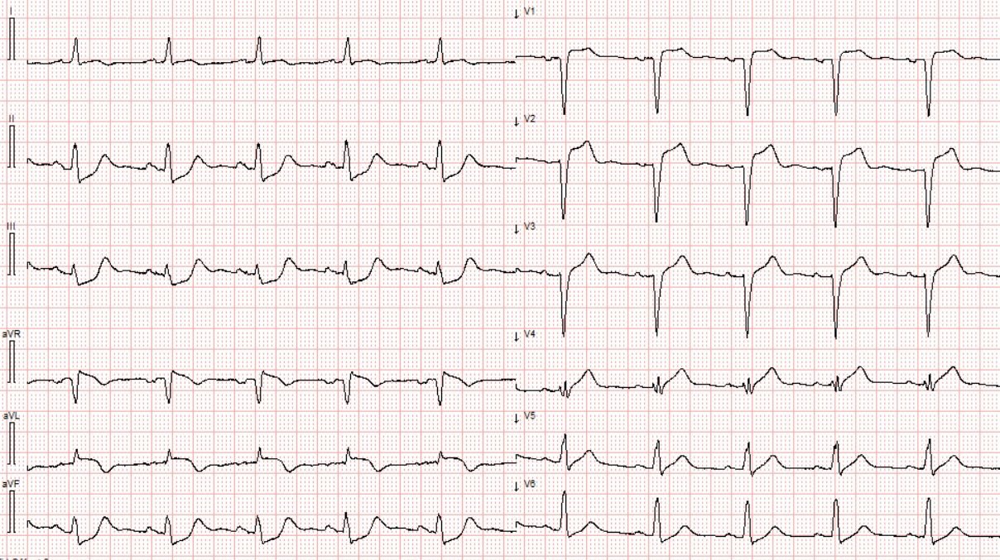
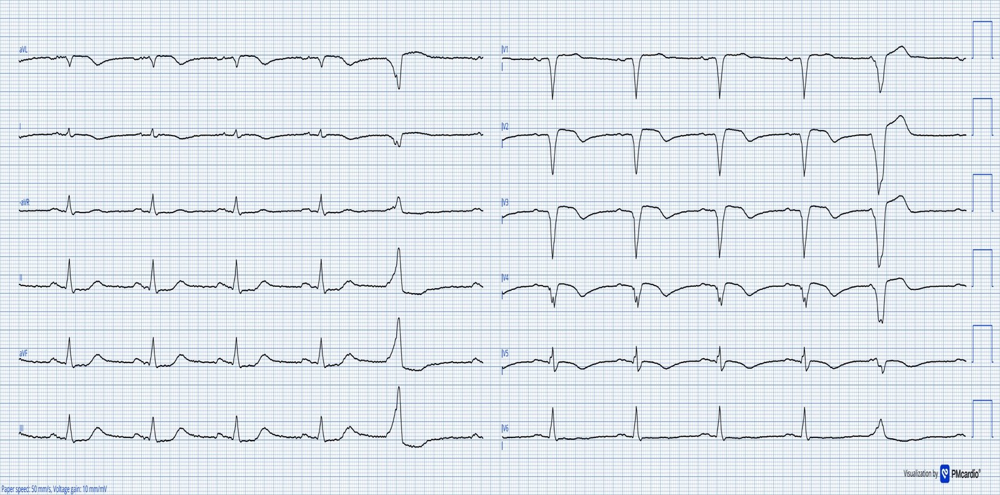
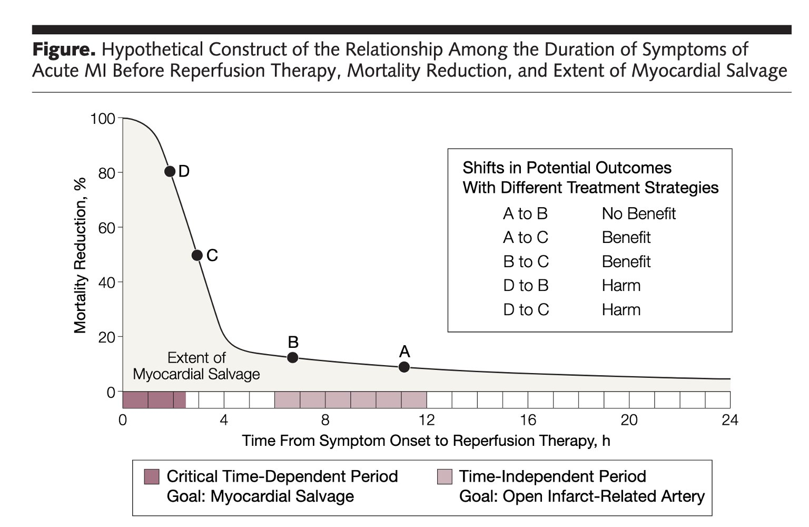
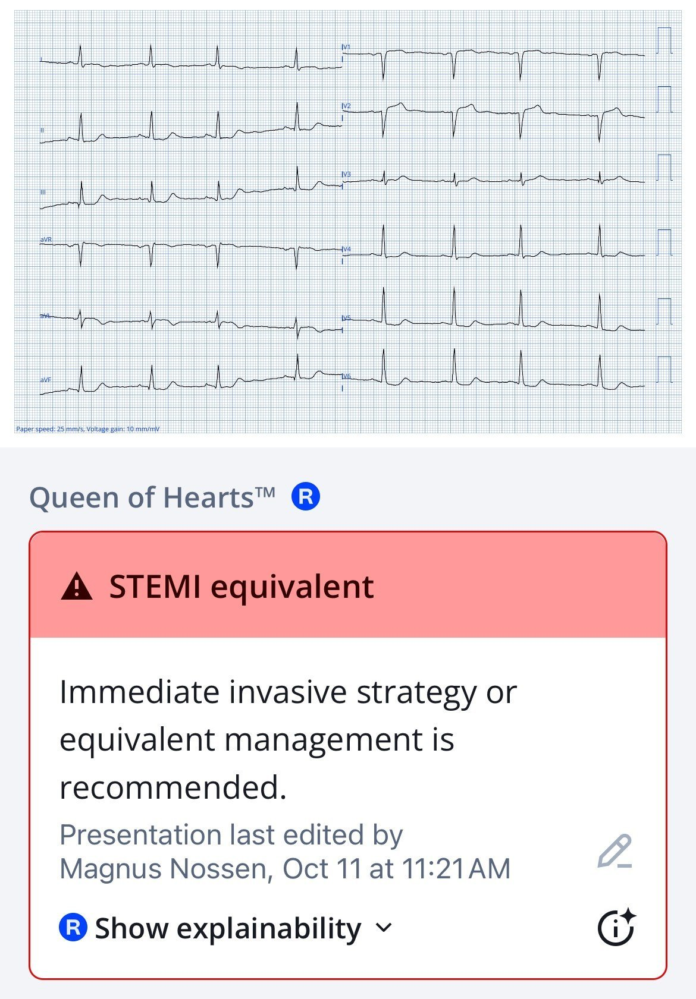
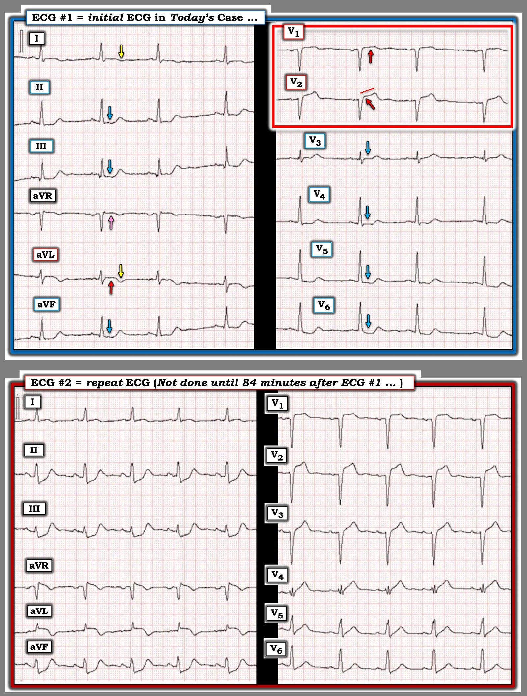

23/10/2025 — Đau ngực với “điện tâm đồ không có giá trị chẩn đoán”. Dấu hiệu là gì? Bạn nghĩ điều gì đã xảy ra?
Bản dịch tiếng Việt của bài "Chest pain with “Non-diagnostic ECG”. What is the finding? What do you think happened?" – Dr. Smith’s ECG Blog. Giữ nguyên toàn bộ 7 hình ảnh của bản gốc.


Tác giả: Magnus Nossen
Một phụ nữ 69 tuổi có tiền sử hút thuốc lá 50 năm gọi đội cấp cứu ngoài viện (EMS) vì đau ngực khởi phát đột ngột. Đau ngực sau xương ức, được mô tả là đau âm ỉ với cường độ 8/10. Kèm theo đau là buồn nôn, nôn và vã mồ hôi nhiều. Điện tâm đồ sau đây do EMS ghi.
Điện tâm đồ # 1


Bạn nghĩ gì?
Bối cảnh lâm sàng được mô tả trong ca hôm nay là điển hình như sách giáo khoa cho hội chứng vành cấp (ACS). Chỉ dựa trên xác suất tiền nghiệm và triệu chứng, việc kích hoạt phòng thông tim (cath lab) là có cơ sở nếu triệu chứng còn kéo dài — và có thể lập luận rằng bệnh nhân này nên được đưa vào phòng thông tim bất kể điện tâm đồ cho thấy gì.
Điện tâm đồ được chuyển từ xe cứu thương tới khoa cấp cứu (ED) địa phương, nơi nó được đọc là không có thay đổi đoạn ST đáng kể nào. Bệnh nhân không được xem xét đưa vào quy trình STEMI và được chở tới khoa cấp cứu địa phương để đánh giá.
Điện tâm đồ cho thấy hình ảnh xoáy trước tim (Precordial Swirl) với ST chênh lên tối thiểu ở các chuyển đạo trước tim bên phải và ST chênh xuống ở V4–V6. Có lẽ nổi bật nhất là ST chênh xuống soi gương ở các chuyển đạo dưới, kèm đoạn ST hơi lồi lên trên ở aVL. Điện tâm đồ này có giá trị chẩn đoán tắc LAD. Chẳng có gì ngạc nhiên, ca này đã bị bỏ sót.
Smith: Điện tâm đồ CŨNG biểu hiện dấu hiệu "Cờ Nam Phi" (South African Flag). Có ST chênh lên ở V2, aVL và I, kèm ST chênh xuống soi gương ở các chuyển đạo dưới.
Đây là kết quả đọc của mô hình AI PMCardio Queen of Hearts


Điều thú vị là cô ấy chỉ thấy dấu hiệu "Cờ Nam Phi" mà KHÔNG thấy xoáy trước tim.
Ứng dụng PMcardio for Individuals 3.0 mới nay đã bao gồm mô hình Queen of Hearts mới nhất và khả năng giải thích của AI (bản đồ nhiệt màu xanh)! Tải ngay cho iOS hoặc Android. https://www.powerfulmedical.com/pmcardio-individuals/ Ứng dụng chưa được FDA phê duyệt, nhưng đã được chứng nhận CE tại EU.
Ca bệnh tiếp diễn: Chỉ sau khi troponin I ban đầu trả về tăng ở mức 3285 ng/L, một điện tâm đồ ghi lại mới được thực hiện, 84 phút sau điện tâm đồ ban đầu. Điện tâm đồ ghi lại này được trình bày dưới đây.
Điện tâm đồ # 2


So với điện tâm đồ ban đầu, sóng R ở V3 đã biến mất, đồng thời cũng ghi nhận mất sóng R đáng kể ở các chuyển đạo V4–V6. ST chênh xuống ở các chuyển đạo dưới thậm chí còn rõ rệt hơn. Có sóng T tối cấp ở khắp các chuyển đạo trước tim, cùng với ST chênh lên ở aVL.
Đến lúc này, siêu âm tim tại giường được thực hiện, cho thấy thành trước vô động. Bệnh nhân được chuyển tới trung tâm có khả năng làm PCI, nơi một chỗ tắc đoạn gần LAD được tái thông và đặt stent. Trong thủ thuật PCI, bệnh nhân có nhiều cơn VT và được sốc điện trở về nhịp xoang. Bà nằm 5 ngày tại đơn vị hồi sức tim mạch (CICU) với hỗ trợ tuần hoàn cơ học. Troponin T đạt đỉnh 19,767 ng/L — một nhồi máu cơ tim RẤT LỚN. Điện tâm đồ dưới đây được ghi sau PCI và cho thấy nhồi máu cơ tim xuyên thành đã hoàn tất.
Smith: với cùng một kích thước ổ nhồi máu, trị số troponin I sẽ lớn gấp 5-10x so với troponin T. Vì vậy, Trop T 19.767 là cực kỳ cao (tương đương 100,000 – 200,000 troponin I)


Bệnh nhân không bao giờ hồi phục khỏi sốc tim và tử vong ngay sau đó.
Bàn luận:
Thời gian là yếu tố sống còn đối với bệnh nhân OMI, vì ngay cả một chậm trễ nhỏ trong điều trị cũng có thể gây tử vong hoặc dẫn tới bệnh tật nặng nề. Trong ca này, bệnh nhân đã phải chịu một sự chậm trễ tái thông mạch máu không cần thiết và hoàn toàn có thể tránh được, điều này nhiều khả năng đã góp phần gây ra sốc tim và một kết cục bi thảm. Nếu mô hình AI Queen of Hearts được dùng để đọc điện tâm đồ trước viện, bệnh nhân đã có thể bỏ qua hoàn toàn khoa cấp cứu địa phương và được làm PCI sớm hơn vài giờ, có thể dẫn tới kết cục tốt hơn.
Smith: Hình minh họa này cho thấy chậm trễ tái tưới máu 2 giờ dẫn tới khối cơ tim bị nhồi máu nhiều hơn 60%. MỖI PHÚT ĐỀU QUAN TRỌNG!! Đây là lý do chúng ta phải loại bỏ chẩn đoán NonSTEMI chết người!!


Queen of Hearts kèm khả năng giải thích
Điện tâm đồ # 1


Những điểm cần học
- Thời gian là yếu tố sống còn đối với bệnh nhân nhồi máu cơ tim cấp. Thời gian đến khi tái tưới máu là yếu tố dự báo kết cục quan trọng nhất trong OMI
- Queen of Hearts đã có thể nhận diện bệnh nhân này từ điện tâm đồ trước viện, điều này lẽ ra đã rút ngắn đáng kể thời gian đến PCI.
= = =
======================================
BÌNH LUẬN CỦA TÔI, bởi KEN GRAUER, MD (23/10/2025):
Là một nhà giáo dục y khoa chăm sóc ban đầu trong suốt sự nghiệp học thuật của mình — tôi thấy thật khó khăn khi xem lại những ca như ca được trình bày hôm nay. Điều này lẽ ra không được xảy ra. Đúng như mục đích của chúng tôi khi trình bày các ca trên ECG Blog này — Cần phải rút ra bài học. Hy vọng phản hồi từ ca hôm nay sẽ được truyền đạt lại.
= = =
Suy nghĩ của tôi:
- Như BS. Nossen đã nêu — biểu hiện lâm sàng của ca hôm nay là “điển hình như sách giáo khoa” cho ACS (hội chứng vành cấp) = một người hút thuốc lâu năm 69 tuổi đến với CP (đau ngực) dữ dội khởi phát đột ngột, kèm buồn nôn, nôn và vã mồ hôi. Xin trích lời BS. Nossen, “Nếu CP còn kéo dài — bệnh nhân này nên được đưa vào phòng thông tim bất kể điện tâm đồ của bà cho thấy gì.”
- Hệ quả tất yếu của điều này là nếu vì bất kỳ lý do gì phòng thông tim không được kích hoạt ngay — thì việc theo dõi cực kỳ sát sao và liên tục là thiết yếu để bảo đảm đây không phải là ACS (tức là, Bất kể điện tâm đồ ban đầu được đọc thế nào — điện tâm đồ ban đầu cần được ghi lại trong vòng 15-đến-30 phút sau). Một ACS đang tiến triển ở bệnh nhân còn CP thường sẽ cho thấy các bất thường ST-T “động” (dynamic) trong khoảng thời gian này.
- Thay vào đó — điện tâm đồ đã không được ghi lại cho tới khi Troponin ban đầu trả về tăng đáng kể. Như chúng tôi đã nhiều lần nhấn mạnh trên Dr. Smith’s ECG Blog — Troponin cung cấp một chỉ dấu kiểu “gương chiếu hậu” về những gì đã xảy ra — mà không cho bạn biết điều gì sắp xảy ra — nghĩa là 1 hoặc 2 giá trị Troponin đầu tiên có thể bình thường dù một biến cố cấp đang hình thành. Do đó — không có lý gì lại chờ kết quả Troponin để cho bạn biết có nên (cũng như khi nào nên) ghi lại điện tâm đồ ban đầu hay không.
- Đáng tiếc là — điện tâm đồ ban đầu không được ghi lại trong suốt 84 phút, và không có ghi nhận nào cho biết bệnh nhân này còn CP hay không (và nếu còn thì dữ dội tới mức nào) vào thời điểm ghi điện tâm đồ #2. Sự đối chiếu lâm sàng này giữa các bản ghi liên tiếp và triệu chứng của bệnh nhân là dễ dàng ghi chép — và là then chốt để hiểu diễn biến lâm sàng của bất kỳ bệnh nhân nào đến khoa cấp cứu vì CP.
= = =
Chúng ta Phải Làm Tốt Hơn!
Bệnh nhân hôm nay đã tử vong. Dù không có cách nào biết được liệu bà có thể được cứu sống hay không — kết cục có lẽ đã khác NẾU điện tâm đồ ban đầu được đọc đúng và được hành động ngay lập tức. Thực tế là có quá nhiều người làm cấp cứu không được đào tạo đầy đủ về những điều cơ bản để nhận diện điện tâm đồ của ACS. Vào năm 2025 — điều này cần phải thay đổi. Sự thay đổi đó có thể được thực hiện theo nhiều cách.
- Các đơn vị EMS có khả năng ghi và truyền điện tâm đồ tại hiện trường. Các trung tâm tiếp nhận cần có một bác sĩ chính (Attending) có mặt tại chỗ, thành thạo đọc điện tâm đồ. Và nếu không có — thì việc truyền một điện tâm đồ tới chuyên gia ở xa cũng chỉ mất không quá 1-2 phút. Ai cũng có điện thoại di động — và các chuyên gia lâm sàng về đọc điện tâm đồ cần sẵn sàng liên lạc được ở bất cứ đâu!
- Như chúng tôi thường xuyên minh họa trên Dr. Smith’s ECG Blog — ứng dụng QOH (Queen-Of-Hearts) đánh giá điện tâm đồ tức thì với độ chính xác đáng kinh ngạc về việc có khả năng là OMI cấp hay không. Sử dụng QOH rộng rãi hơn có thể giúp ích cả cho việc ra quyết định cấp cứu, lẫn cho đào tạo nhằm nâng cao năng lực đọc điện tâm đồ của người hành nghề.
- Những bước đơn giản có thể tạo ra khác biệt lớn. Nhiều sai sót đã được điểm lại trên ECG Blog này kể từ khi BS. Smith bắt đầu đăng các ca vào năm 2008 — lẽ ra đã có thể tránh được bằng những biện pháp đơn giản như: i) Tôn trọng bệnh sử lâm sàng (tức là, Nhận thức rằng bệnh sử trong ca hôm nay lập tức xếp bệnh nhân này vào nhóm nguy cơ cao có biến cố cấp — đến mức ngay cả những thay đổi điện tâm đồ tối thiểu cũng đáng được chú ý sát sao); — ii) Bảo đảm ghi các điện tâm đồ liên tiếp đúng lúc (tức là, Không chờ hàng giờ mới ghi lại bản ghi ban đầu); — iii) Thường quy ghi chú có CP hay không (và nếu có — dữ dội tới mức nào?) vào thời điểm ghi mỗi điện tâm đồ liên tiếp (vì việc này dễ thực hiện ngay lúc đó — và khi đối chiếu với các bản ghi liên tiếp, sẽ giúp nhận biết động mạch “thủ phạm” vẫn còn tắc, hay đã tự tái thông); — iv) Nhận thức rằng một giá trị Troponin bình thường đơn lẻ không loại trừ được biến cố cấp; — và, v) Chấp nhận rằng mô hình STEMI đã lỗi thời, và bỏ sót ~30% số OMI (chưa kể nhiều ca thông tim bị trì hoãn hàng giờ cho tới khi những OMI vốn đã rõ ràng trên điện tâm đồ ban đầu cuối cùng cũng có đủ ST chênh lên để thỏa tiêu chuẩn STEMI).
= = =
Điện tâm đồ Ban đầu của ca hôm nay Không nên bị Bỏ qua!
Cả 12 chuyển đạo trên điện tâm đồ ban đầu của ca hôm nay đều bất thường!
- Ở một bệnh nhân CP dữ dội mới khởi phát — “con mắt” của tôi lập tức bị thu hút bởi đoạn ST thẳng đuỗn với ST chênh lên 1.5 mm tại điểm J ở chuyển đạo V2 (mũi tên ĐỎ ở chuyển đạo V2 trong Hình 1). Trong bối cảnh dấu hiệu này ở chuyển đạo V2 — đoạn ST thẳng đuỗn và chênh lên kín đáo hơn ở chuyển đạo V1 cũng rõ ràng là bất thường (trong hình chữ nhật ĐỎ). Đáng lưu ý — có các phức bộ QS không rõ thời gian xuất hiện (Mới hay cũ?) ở cả V1,V2.
- Trái ngược hẳn với ST chênh lên ở các chuyển đạo V1,V2 này — là ST dẹt và chênh xuống có mặt ở 4 chuyển đạo ngực còn lại (các mũi tên XANH ở các chuyển đạo V3,V4,V5,V6).
- ST dẹt và chênh xuống tương tự được thấy ở các chuyển đạo II,III,aVF
- ST dạng vòm (coving) với ST hơi chênh lên và phần cuối sóng T đảo ngược được thấy ở chuyển đạo aVL — kèm ST dẹt và phần cuối sóng T hơi đảo ngược ở chuyển đạo I (các mũi tên VÀNG làm nổi bật phần cuối sóng T đảo ngược ở các chuyển đạo I và aVL).
- Chuyển đạo còn lại = chuyển đạo aVR — cho thấy ST dạng vòm với ST hơi chênh lên.
Nhận định: Cả 12 chuyển đạo trên điện tâm đồ ban đầu này đều có bất thường ST-T. Ít nhất thì — ST chênh xuống dạng bậc thềm (shelf-like) có mặt ở 7 chuyển đạo (các mũi tên XANH) — kết hợp với ST chênh lên kín đáo ở chuyển đạo aVR gợi ý DSI (thiếu máu cục bộ dưới nội tâm mạc lan tỏa), mà ở một bệnh nhân CP mới xuất hiện — nhiều khả năng nhất cho thấy bệnh mạch vành nặng và/hoặc nhiều nhánh.
- Vì điện tâm đồ #1 được ghi tương đối sớm trong diễn tiến biến cố cấp của bệnh nhân này — ST chênh lên ở điện tâm đồ #1 có biên độ khiêm tốn và giới hạn ở 3 chuyển đạo (các chuyển đạo aVL,V1,V2). Dù vậy — sự tương phản về hình thái giữa các chuyển đạo có ST chênh lên nằm ngay cạnh 7 chuyển đạo có ST chênh xuống dạng bậc thềm ở bệnh nhân mới đau ngực 8/10 (CP) này tạo nên một “bức tranh điện tâm đồ” cần phải được nhận ra.
- Xét đến sự tiến triển ngoạn mục ở điện tâm đồ #2 — gần như chắc chắn đã thấy được thay đổi ST-T “động” nếu điện tâm đồ ghi lại được thực hiện trong vòng 15-đến-20 phút sau điện tâm đồ #1.
= = =
Hình 1: Tôi đã tái hiện 2 bản ghi đầu tiên của ca hôm nay.

